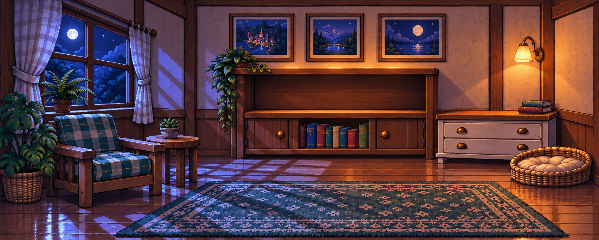
Черновики для приёмки Claude. Это не подтверждение готовности к встраиванию. Размеры сцен, комнаты и иконок отличаются от брифа; камера комнаты и фон питомника требуют проверки.
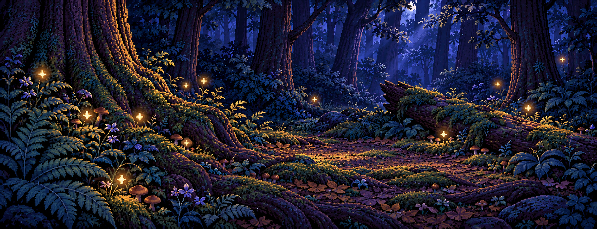
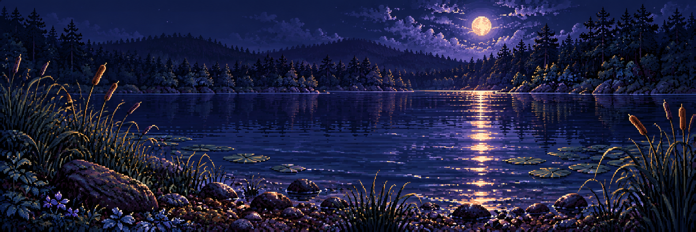
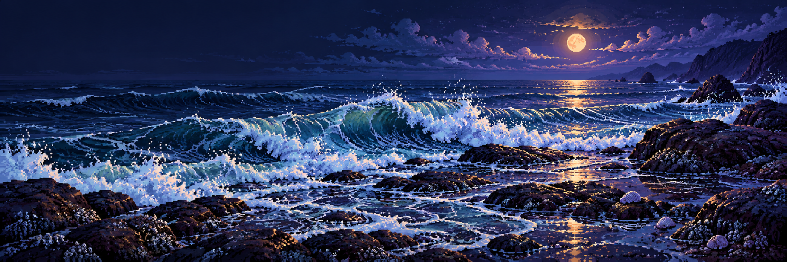
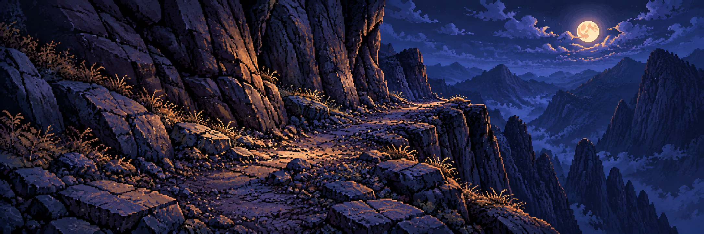
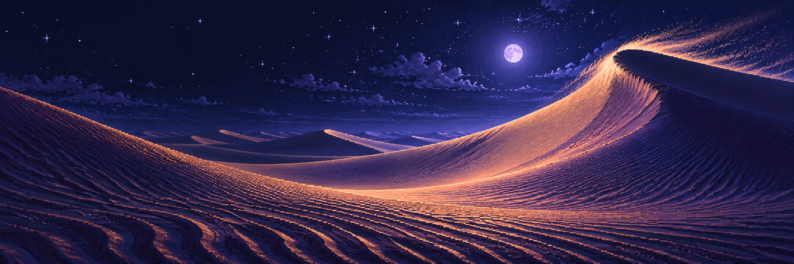
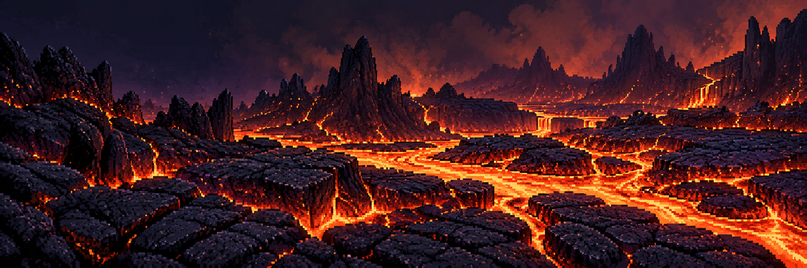
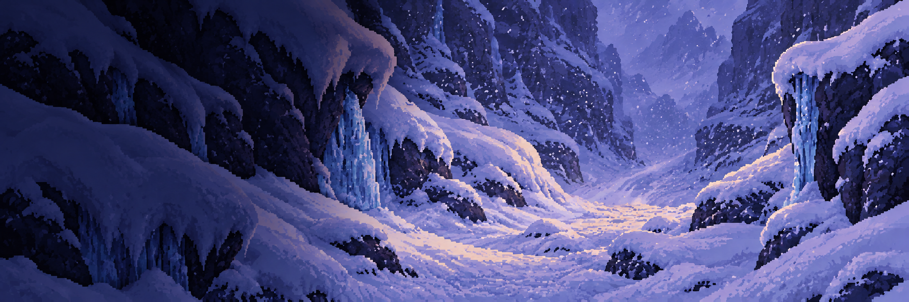
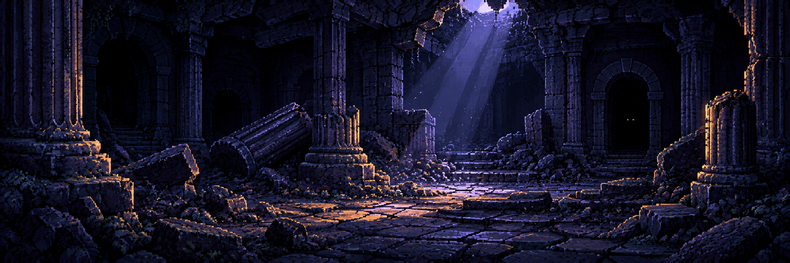
Условные полосы 1200×150 и 1784×560. Это проверка изображения, не реальный WPF-экран. Для снега показан исправленный snow-v2 с затемнённой левой третью.
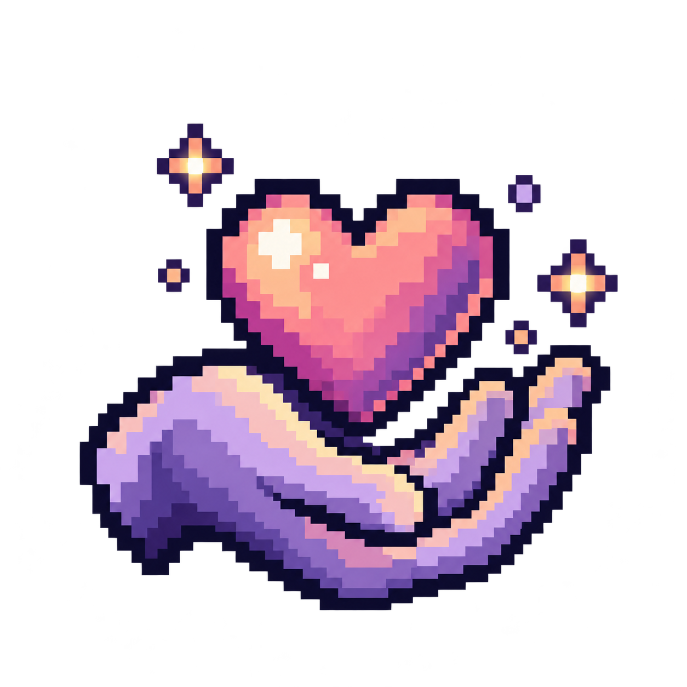
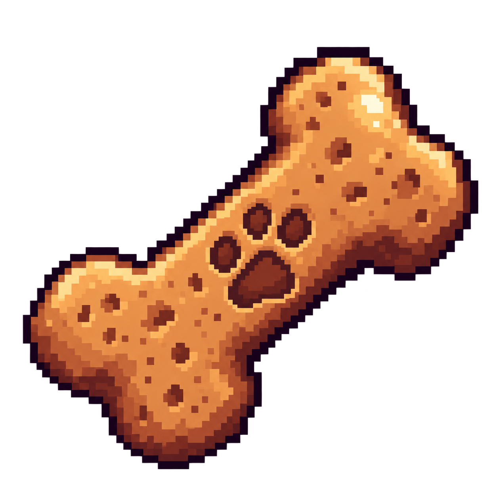
Обе версии приведены браузером к одному прямоугольнику. Наведение скрывает ночную версию. При двойных контурах строгая геометрическая приёмка не пройдена.

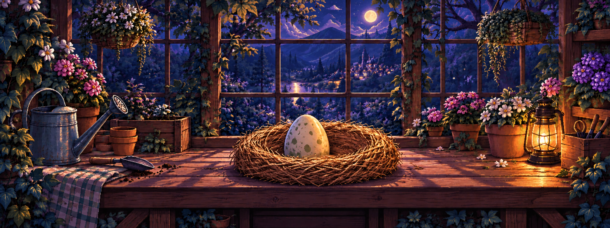
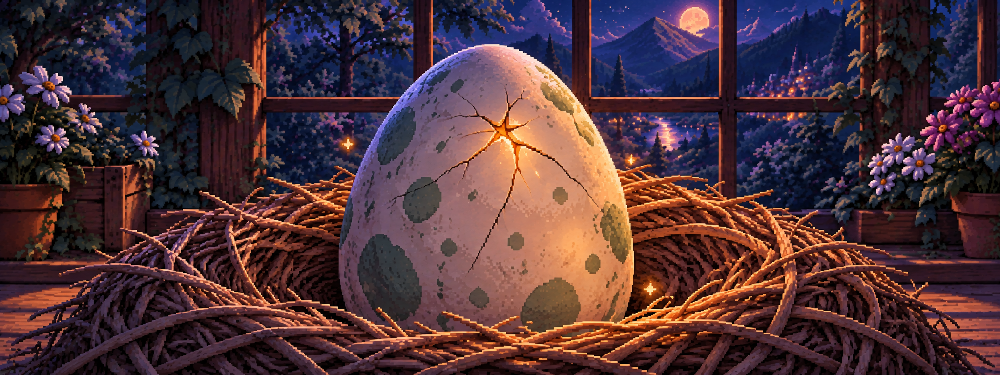
Исходные PNG не пересэмплированы. Точные промпты и дата — в соседних .prompt.txt; реальные размеры и SHA-256 — generation-manifest.json.